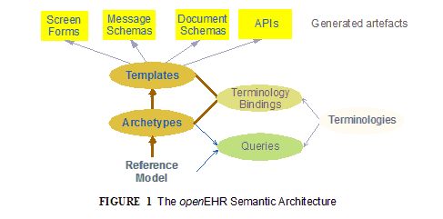
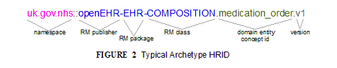
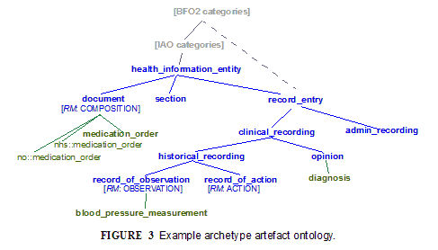
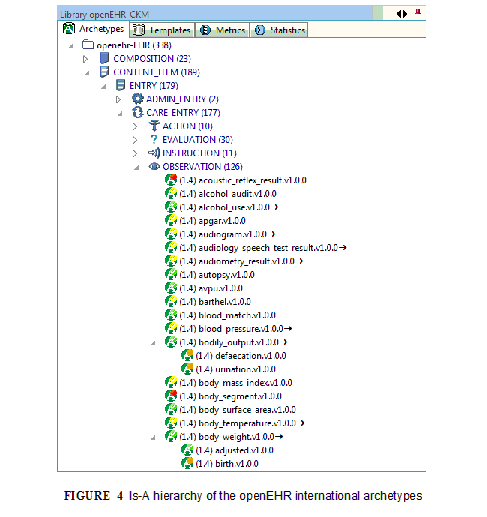
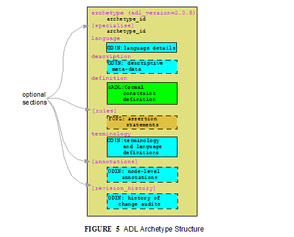
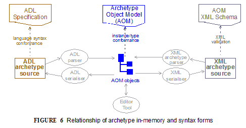
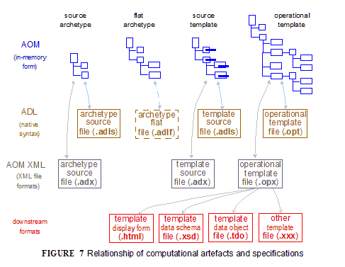
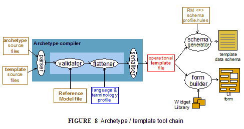
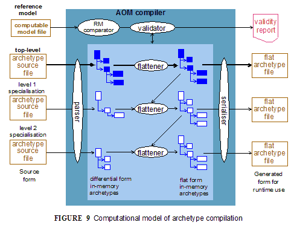

Introduction
Business Purpose
Archetypes are a way of adding domain semantics to information models that define data, while avoiding endless growth and maintenance of the base information models.
To make the distinction between domain semantics and information models concrete, information models in openEHR, ISO 13606-1 and more generally in e-health typically define things like 'clinical data types', such as Quantity (with units, accuracy etc); Coded text; Ordinal (an Integer/symbol conjunction); and various generic clinical structures, such as 'clinical statement' (denoted by the type Entry in openEHR and ISO 13606-1), clinical document, report, and so on. Such a class model may contain 50-100 classes, including 20+ classes for the clinical data types. This enables the construction of instance structures corresponding to the various parts and sections of e.g. a clinical encounter note or a hospital discharge summary. However, neither a class model of this size, nor the capabilities of standard UML can naturally accommodate the explosion of diversity of possible values of instances which can make up a clinical document created in any particular situation (e.g. a specific kind of patient visiting a specialist), for example the tens of thousands of clinical observations (e.g. 'systolic blood pressure', 'visual acuity', etc, many of them consisting of multiple data points in specific structures), or the O(1E5) laboratory analyte result types. Further, the size of terminology needed to annotate data items, both 'names' and 'values' in a name/value understanding of the data is in the O(1E5) - O(1E6) concepts range, as exemplified by the SNOMED CT and ICD11 terminologies.
The above situation applies across most information-rich industries, with varying but generally very large numbers.
Although technically these numerous possible values could just be understood as the specific values that 'happen to occur' in a situation of data creation, it is widely understood within IT in general that domain data value 'complexes' (co-occurring structures of data) correspond to meaningful patterns that constitute a relatively small fraction of the astronomical number of possible combinations of values within structures. Thus, while some tens to hundreds of thousands of 'clinical statement' patterns would adequately cover nearly all of general medical data recording (i.e. leaving the terminal real world values such as actual blood pressure open, within their respective sanity ranges), the information models in typical use would permit possible instance structures in the O(1E10) and much higher ranges. In other words, most possible data constructions are garbage.
This is akin to the situation in natural language, where meaningful sentences constitute a tiny fraction of possible, grammatically correct sentences.
It is also widely recognized that mechanisms are needed to enable some sort of domain level 'modeling' or 'templating', to enable the common patterns to be defined, and thus to allow the creation of software or other mechanisms (e.g. pre-built UI forms) to limit the possible instance structures to those that actually make sense. The general need was identified in Martin Fowler's 1991 book Analysis Patterns, in which 'patterns' are illustrated in 'above the line' parts of UML diagrams, but has been known for some decades. It is generally understood that this kind of modeling cannot simply be an extension of the existing software or database schemata; if it is, it implies endless maintenance and updating of deployed software, and worse, frequent database migration. In systems operating 24x365, and routinely creating Terabytes of data per year per hospital, this is not an acceptable approach.
Consequently, most large system software products in the health and other domains have some kind of configuration or template building tool(s) that enable modeling of typical domain content patterns, usually conceived of as screen forms.
The problem in mainstream IT has been that no such capability is available independent of particular software products (specific vendors), concrete forms (UI forms, XML Schemas etc) or domains (e.g. process and control systems engineering have domain specific languages) - i.e. even tools that may be technically powerful enough are buried inside specific products, and are usually targeted to the database schemas of the product.
An important economic factor is that the creation of good quality domain models is time-consuming and expensive, relying as it does on domain experts - typically experienced clinicians, engineers etc - rather than IT staff. If models are created inside a specific product (e.g. a particular hospital information system), and that product is replaced, there is often little appetite or availability of the staff to recreate the work done to create the models/templates created in the first product. Multiplied across products, sites, and whole industry verticals, the lack of standard ways of representing models of domain content has become a significant blockage to the production of high quality information systems. Instead, as each solution is replaced, its domain models usually die with it.
The need for an efficient, formal, and product- and format-independent domain modeling capability is therefore clear. The sheer numbers of content patterns / models in health have led to the creation of an approach, centered around the Archetype formalism, used in conjunction with available terminologies (i.e. SNOMED CT, LOINC, ICDx and many others).
Two categories of domain content models canbe distinguished. There is a universal need to be able to represent both use-independent definitions of 'data points', and use-case dependent definition of 'data sets'. Consider the case of recording patient vital signs. Assume that a content model can be defined for 'blood pressure', 'heart rate' and 'blood oxygen'. These definitions need to be independent of specific uses such as patient home measurement, GP encounter, and hospital bedside measurement, since in all these cases, the blood pressure etc. are recorded in exactly the same way. However in each case, these vital signs data points are recorded within a larger data set of items that correspond to the health system event occurring, such as a GP patient health checkup.
Thus there are two related needs: to be able to model re-usable domain data items and structures, and secondly, to be able to model the larger use case specific structures in which they may occur. The alternative would be to create a domain model for every data set and within many of these models, to repeatedly define the same sub-model of recurring content, such as 'blood pressure'.
Formalism Overview
The openEHR Archetype formalism is designed to be independent of any specific information model (known as a 'reference model'), product, technical format, or industry vertical. It is designed so that instances of the formalism, known as Archetypes, can be computationally processed into desired output forms corresponding to specific technology environments. This is routinely performed in openEHR (and also Intermountain) tooling environments.
The formalism primarily addresses the expression of models of possible data instance structures, rather than higher level concepts such as workflows, clinical guidelines (which are decision graphs) and so on, although its general approach can be applied to any of these, i.e. the use of a model of 'what can be said' and a formalism or mechanism for constraining possibilities to the meaningful subset.
Given the two categories of model described above, the archetype formalism, coupled with orthodox information models (typically object-oriented), results in a way to model information from any domain in three logical layers as follows:
-
Information model: known as the ‘Reference Model’ (RM) here, which defines the semantics of data;
-
Archetypes: models defining possible arrangements of data that correspond to logical data points and groups for a domain topic; a collection of archetypes constitutes a library of re-usable domain content definition elements;
-
Templates: models of content corresponding to use-case specific data sets, constituted from archetype elements.
In this approach, the Reference Model level is limited to defining data elements and structures, such as Quantity, Coded text and various generic containment structures. This enables stable data processing sofware to be built and deployed independently of the definition of specific domain information entities.
Although in the abstract, Archetypes are easily understood, Templates imply some nuances. A Template is an artefact that enables the content defined in published archetypes to be used for a particular use case or business event. In health this is often a ‘health service event’ such as a particular kind of encounter between a patient and a provider. Archetypes define content on the basis of topic or theme e.g. blood pressure, physical exam, report, independently of particular business events. Templates provide the way of using a particular set of archetypes, choosing a particular (often quite limited) set of nodes from each and then limiting values and/or terminology in a way specific to a particular kind of event, such as ‘diabetic patient admission’, ‘ED discharge’ and so on. Such events in an ICT environment often have a corresponding screen ‘form’ (which may have one or more ‘pages’ or subforms and some workflow logic) associated with them; as a result, an openEHR template is often a direct precursor to a form in the presentation layer of application software. Templates are the technical means of using archetypes in runtime systems.
One other semantic ingredient is crucial: that of terminology, with the implication of underlying ontology/ies. The RM/Archetypes/Templates ‘model stack’ defines information as it is created and used - an epistemological view, but does not try to describe the ontological semantics of each information element. The latter is the business of ontologies, such as can be found in the Open Biomedical Ontology (OBO) Foundry, and terminologies, such as SNOMED CT, which define naming over an ontological framework for use in particular contexts.

The connection of the information model stack to terminology is made in archetypes and templates, via terminology bindings. Through these, it is possible to state within archetypes and templates the relationship between the ‘names’ of elements (ontologically: what the element ‘is-about’) with terminology and ontology entities, as well as the relationship between element values, and value domains on the terminology side.
A final ingredient is required in the semantic mix: querying. Under the archetype methodology, information queries are defined solely in terms of archetype elements (via paths), terminology concepts and logical reference model types, without regard to data schemas used in the persistence layer. Archetype-based queries are therefore portable queries, and only need to be written once for a given logical information structure.
Together, reference model, archetypes, and templates (with bound terminology) constitute a sophisticated semantic model space. However, any model needs to be deployed to be useful. Because templates are defined as abstract artefacts, they enable single-source generation of concrete artefacts such as XML schemas, screen forms and so on. This approach means that a single definition of the data set for ‘diabetic patient encounter’ can be used to generate a message definition XSD and a screen form.
It is the template ‘operational’ form that provides the basis for tool-generation of usable downstream concrete artefacts, which embody all of the semantics of the implicated Templates in a form usable by ‘normal’ developers with typical expertise and skills.
Downstream artefacts when finally deployed in operational systems are what enable data to be created and queried. Artefacts created by archetype-based ecosystems enable informations systems of significantly higher quality, semantic power and maintainability to be built, because both the data and querying are model-based, and the models are underpinned by terminology and ontology.
Underlying all of this are of course formalisms and tooling - the language and tools of archetypes. This overview describes the archetype specifications and how they fit together and support tool-building as well as downstream model-based software development.
The Specifications
The semantics described above are defined in the following set of specifications:
-
Knowledge Artefact Identification: a normative specification of archetype and template model identification, versioning, referencing and lifecycle;
-
ADL: the Archetype Definition Language: a normative abstract syntax for archetypes, templates and terminology binding;
-
AOM: the Archetype Object Model: the normative structural model of archetypes and templates;
-
The Template Guide: an informative specification of how the templating semantics of ADL/AOM are used to create templates;
-
AQL: the Archetype Querying Language: the normative querying language based on archetypes and terminology.
The first specification above describes the semantics of Archetype identifiers, which is equivalent to describing the structure of the Archetype-based model space. It also describes aspects of lifecycle management and versioning of Archetypes.
The Archetype Definition Language (ADL) is a formal abstract syntax for archetypes, and can be used to provide a default serial expression of archetypes. It is the primary document for human understanding of the semantics of archetypes.
The AOM is the definitive formal expression of archetype semantics, and is independent of any particular syntax. The main purpose of the AOM specification is to specify to developers how to build archetype tools and also EHR components that use archetypes.
The semantics defined in the AOM are used to express the object structures of source archetypes and flattened archetypes. Since in ADL 2 a template is just a kind of archetype, the AOM also describes the semantics of templates as well. The two source forms are authored by users via tools, while the two flat forms are generated by tools. The rules for how to use the AOM for each of these forms is described in details in this specification.
The Template Guide provides technical description of how openEHR Templates are used to represent definition of data sets. This is primarily useful to tool-builders.
Lastly, the Archetype Query Language (AQL) specification defines a query language that assumes a Reference Model and Archetypes as its semantic base.
The remainder of this document provides further high level description of the Archetype-based model environment, essential for understanding the formal specifications.
Semantic Overview
Archetypes are topic- or theme-based models of domain content, expressed in terms of constraints on a reference information model. Since each archetype constitutes an encapsulation of a set of data points pertaining to a topic, it is of a manageable, limited size, and has a clear boundary. For example an ‘Apgar result’ archetype of the openEHR reference model class
OBSERVATION
contains the data points relevant to Apgar score of a newborn, while a ‘blood pressure measurement’ archetype contains data points relevant to the result and measurement of blood pressure. Archetypes are assembled by templates to form structures used in computational systems, such as document definitions, message definitions and so on.
In the following, unless otherwise qualified, the general term ‘archetype’ includes templates, which are technically just a special kind of archetype.
Identification and the Virtual Archetype Space
Archetypes can be identified in two ways: with GUIDs, and with Human Readable IDs (HRIDs). The Archetype HRID structure corresponds to the structure of the model space created by the combination of Reference Model and Archetypes, and is shown in the following example.

The blue segment
openEHR-EHR-COMPOSITION
indicates the entity in a reference model space, here, the class
COMPOSITION
in the package EHR from the openEHR Reference Model. The green part ‘medication_order’ indicates the domain level entity being modelled - a (record of a) medication order (i.e. part of a typical doctor’s prescription). The combination of the RM class space and semantic subspaces defines the logical model space created by the archetype formalism.
We can understand this model space equivalently as an ontological space, where the models act as ontological descriptions of real data. Philosophically speaking this is somewhat of a sleight-of-hand, since the data are of course technically created from the very models themselves. However, if the models (Reference Model and Archetypes) were defined as representing information from the real world, such as paper or narrative notes and data entry by healthcare professionals (prescriptions, progress notes, lab results etc) then they can be understood as an ontological description of those original informational entities. The sleight-of-hand comes in when we follow the normal course in IT, and use a formally defined model to create data. Data created in this way can be thought of as a higher precision version of original data used to inform the original modelling effort.
Returning to the Archetype HRID, the leading namespace indicates the Custodian Organisation, here the UK NHS. The implication of the namespace within the HRID is that multiple agencies may publish competing ideas of a ‘medication_order’ archetype based on the openEHR
COMPOSITION
class, and there will not be any clash. Although the namespace is prepended to the archetype identifier in the usual way, in fact it should be understood as a discriminator on the domain entity. In other words, the identifiers
uk.gov.nhs::openEHR-EHR-COMPOSITION.medication_order.v1
and
no.regjeringen::openEHR-EHR-COMPOSITION.medication_order.v1
should be understood as UK NHS and Norwegian Health Department ideas of ‘medication_order’, based on the same openEHR Reference Model
COMPOSITION
class.
This is useful as a practical measure, to avoid immediate chaos. In the longer term, it is intended that archetype semantic identifiers for a given domain are located in a common international ontology of information artefact types. For the clinical domain, it could look as shown in See Example archetype artefact ontology., where it is assumed that the
Basic Formal Ontology 2nd Edition (BFO2)
and
Information Artefact Ontology (IAO)
upper level ontologies would provide the foundation of clinically specific models.

The situation with ‘medication_order’ is shown under the document/COMPOSITION node: both the NHS and Norwegian variants of ‘medication_order’ as well as a universally accepted form are shown.
Namespacing of archetypes has an important practical consequence: differently namespaced archetypes can co-exist within the same Library workspace (see below for definition). This situation can come about due to archetypes being transferred or forked from an original custodian to another.
An Archetype HRID may legally have no namespace. This means it is uncontrolled and not managed by any organisation.
The last part of the archetype identifier is the version. Logical archetype identifiers include the major version i.e. first number of a 3-part version (e.g. 1.5.0), on the basis that a change in major version number is generally understood in IT to be a breaking change to the artefact. Accordingly, different major versions are considered different artefacts from a computational point of view. The full version can also be used to construct an identifier useful for physical resources, e.g. files or version system references.
Making progress on a universal ontology for a whole domain such as clinical informatics is likely to be complex and slow, due to the fact that two types of ‘custodian’ or ‘publisher’ are involved, namely Reference Model custodians - typically standards bodies - and Archetype custodians - typically domain-related organisations within major jurisdictions, e.g. MoH Information Authorities. If we also assume the involvement of an organisation such as
Open Biological and Biomedical Ontologies
(OBO), a multi-year process is clearly implied.
A practical view is to treat a given Reference Model (or, a small number of strongly related RMs) as fixed, and to try to develop an ontology of archetypes under that. This would require agreements across Archetype custodians, and a successful outcome would result in a single definitional space - everyone would agree for example that a ‘systemic arterial blood pressure measurement’ was called just that, and had a short name of (say) ‘bp_measurement’. It would not obviate the need for custodians however, since it is clear that for most domains, there remain real distinctions across geographies and sub-specialties. For example, an internationally agreed ‘pregnancy record’ entity might have real specialisations such as ‘European standard pregnancy record’, ‘Swedish pregnancy record’ and so on, where the some European body, and the Swedish Ministry of Health were both custodians.
Some of this kind of harmonisation is occurring within openEHR, due to cooperation of national-level archetype governance organisations with the openEHR Foundation, acting as the governance body for international archetypes, hosted at the
openEHR Clinical Knowledge Manager
. Even this level of harmonisation is slow and cannot therefore be taken as given for the purpose of the Archetype formalism.
Accordingly, the formalism and tooling is designed on the basis of the simplest realistic assumption: that the hierarchy of Reference Model types along with optionally namespaced Archetypes form a self-standing information ontology, in the same manner as shown in See Example archetype artefact ontology., i.e. an IS-A hierarchy formed of RM types followed by Archetypes. The practical value of this is twofold:
-
real data can be computationally classified under various points in the ontology - i.e. we can computationally determine if certain data are a ‘bp_measurement’, a ‘UK NHS bp_measurement’ or even just an
OBSERVATION
;
-
we can use the subsumption operator on the IS-A hierarchy to define useful subsets of the overall space, e.g. {any-descendant of ‘medical_device’}, {any-descendant-or-self of OBSERVATION’} and so on.
The IS-A hierarchy is available in archetype tools such as the
ADL Workbench
, as shown in See Is-A hierarchy of the openEHR international archetypes.

Collections of Archetypes
Within the virtual archetype space described above, we can identify different groups or collections of archetypes, which relate to how tools work, particularly with respect to how identifiers are resolved. For the forseeable future, all of the following types of collections can be assumed to occur under specific custodian namespaces, i.e. managers and publishers of archetypes.
An Archetype Library corresponds to a coherent collection of archetypes actually available within a single workspace or repository. All archetypes and templates in the Library would typically be based on the same Reference Model, but this need not be so, e.g. in the case of test archetypes. Apart from the latter case, an Archetype Library consists of archetypes that are normally designed to be used together in validating and creating information. These can include non-namespaced (unmanaged) and differently namespaced archetypes, where mixing occurs due to promotion and/or forking. In the latter case, it is up to the Library maintainers to ensure compatibility of all archetypes in the Library.
One or more Archeype Libraries exist within an Archetype Repository, which is understood as a physical repository in which archetypes are managed, typically with version control, download capability etc. An Archetype Repository does not connote any semantics, rather it provides a unit of access, committal and versioning for tools to work with.
Archetype Libraries, within Archetype Repositories are published by Custodian Organisations, corresponding to the namespace part of a fully-qualified archetype identifier.
At the outermost level, the Universe of Archetypes for a Reference Model corresponds to all existing archetypes for that RM, and is therefore a virtual collection of all Archetype Libraries based on that RM. It will therefore encompass archetypes created by different Custodian Organisations, different RM classes, various semantic entities (what the archetype is-about, e.g. ‘blood pressure measurement’), and finally multiple versions and revisions of all of these.
Archetype Relationships
Within an Archetype Library, two kinds of relationship can exist between archetypes: specialisation and composition.
3.3.1 Archetype Specialisation
An archetype can be specialised in a descendant archetype in a similar way to a sub-class in an object-oriented programming language. Specialised archetypes are, like classes, expressed in a differential form with respect to the flat parent archetype, i.e. the effective archetype resulting from a flattening operation down the specialisation hierarchy. This is a necessary pre-requisite to sustainable management of specialised archetypes. An archetype is a specialisation of another archetype if it mentions that archetype as its parent, and only makes changes to its definition such that its constraints are ‘narrower’ than those of the flat parent. Note that this can include a specialised archetype defining constraints on a part of the reference model not constrained at all by parent archetypes - since this is still ‘narrowing’ or constraining. The chain of archetypes from a specialised archetype back through all its parents to the ultimate parent is known as an archetype lineage. For a non-specialised (i.e. top-level) archetype, the lineage is just itself.
In order for specialised archetypes to be used, the differential form used for authoring has to be flattened through the archetype lineage to create flat-form archetypes, i.e. the standalone equivalent of a given archetype, as if it had been constructed on its own. A flattened archetype is expressed in the same serial and object form as a differential form archetype, although there are some slight differences in the semantics, other than the use of differential paths.
Any data created via the use of an archetype conforms to the flat form of the archetype, and to the flat form of every archetype up the lineage.
3.3.2 Archetype Composition
In the interests of re-use, archetypes can be composed to form larger structures semantically equivalent to a single large archetype. Composition allows two things to occur: for archetypes to be defined according to natural ‘levels’ or encapsulations of information, and for the re-use of smaller archetypes by higher-level archetypes. There are two mechanisms for expressing composition: direct reference, and archetype slots which are defined in terms of constraints. The latter enables any subset of Archetypes, e.g. defined via subsumption relations, to be stated as the allowed set for use at a certain point in a compositional parent archetype.
These semantics are described in detail in their syntax form in the ADL specification, and in structural form in the AOM specification.
Archetype Internals
An archetype is represented computationally as instances of the Archetype Object Model. For persistence purposes it needs to be serialised. The Archetype Definition Language (ADL) is used as a normative authoring and persistence language, in the same way as a programming language syntax is used to represent programming constructs (which are, it should be remembered not syntax, but the structured outputs of language compilers). In particular, it is designed to be terse and intuitively human readable. Any number of other serialisations are available, usually for technical reasons. These include ‘object dump’ ODIN, XML and JSON serialisations, and may include other representations in the future, such as OWL and OMG XMI, according to the technical needs of emerging development technologies. For the purposes of describing and d ocumenting the Archetype formalism, ADL is generally used.
XML-schema based XML is used for many common computing purposes relating to archetypes, and may become the dominant syntax in terms of numbers of users. Nevertheless, XML is not used as the normative syntax for archetypes for a number of reasons.
-
There is no single XML schema that is likely to endure. Initially published schemas are replaced by more efficient ones, and may also be replaced by alternative XML syntaxes, e.g. the XML-schema based versions may be replaced or augmented by Schematron.
-
XML has little value as an explanatory syntax for use in standards, as its own underlying syntax obscures the semantics of archetypes or any other specific purpose for which it is used. Changes in acceptable XML expressions of archetypes described above may also render examples in documents such as this obsolete.
-
XML usage is starting to be replaced by JSON in many programming environments.
An XML schema for archetypes is available on the openEHR website.
3.4.1 Archetype Definition Language (ADL)
ADL uses three sub-syntaxes: cADL (constraint form of ADL), ODIN (Object Data Instance Notation), and a version of first-order predicate logic (FOPL). The cADL and FOPL parts express constraints on data which are instances of an underlying information model, which may be expressed in UML, relational form, or in a programming language. ADL itself is a very simple ‘glue’ syntax, which connects blocks of the subordinate syntaxes to form an overall artefact. The cADL syntax is used to express the archetype
definition
, while the ODIN syntax is used to express data which appears in the
language
,
description
,
terminology
, and
revision_history
sections of an ADL archetype. The top-level structure of an ADL archetype is shown in See ADL Archetype Structure..

Templates
In practical systems, archetypes are assembled into larger usable structures by the use of templates. A template is expressed in the same source form as a specialised archetype, typically making use of the slot-filling mechanism. It is processed against an archetype library to product an operational template. The latter is like a large flat-form archetype, and is the form used for runtime validation, and also for the generation of all downstream aretefacts derived from templates. Semantically, templates perform three functions: aggregating multiple archetypes, removing elements not needed for the use case of the template, and narrowing some existing constraints, in the same way as specialised archetypes. The effect is to re-use needed elements from the archetype library, arranged in a way that corresponds directly to the use case at hand.
This job of a template is as follows:
-
composition: compose archetypes into larger structures by indicating which archetypes should fill the slots of higher-level archetypes;
-
element choice: choose which parts of the chosen archetypes should remain in the final structure, by doing one or more of the following:
-
removal: remove archetype nodes (‘data points’) not needed for the purpose of the template;
-
mandation: mark archetype nodes (‘data points’) mandatory for the runtime use of the template;
-
nodes may also be left optional, meaning that the corresponding data item is considered optional at runtime;
-
narrow constraints: narrow remaining constraints on archetype elements or on the reference model (i.e. on parts of the RM not yet constrained by the archetypes referenced in the template);
-
set detaults: set default values if required.
A template may compose any number of archetypes, but choose very few data points from each, thus having the effect of creating a small data set from a very large number of data points defined in the original archetypes.
The archetype semantics used in templates are described in detail in the ADL specification; a detailed description of their use is given in the Template Guide specification.
The AOM describes in structural form all the semantics of templates. Note that the AOM does not distinguish between archetypes, specialised archetypes or templates other than by use of an artefact type classifier. All other differences in how archetypes and templates work are implemented in tools that may prevent or allow certain operations depending on whether the artefact being worked on is an archetype or template.
Artefacts
Model / Syntax Relationship
The Archetype Object Model can be considered as the model of an in-memory archetype or a template, or equivalently, a standard syntax tree for any serialised format - not just ADL. The normative abstract syntax form of an archetype is ADL, but an archetype may just as easily be parsed from and serialised to XML, JSON or any other format. The in-memory archetype representation may also be created by calls to a suitable AOM construction API, from an archetype or template editing tool. These relationships, and the relation between each form and its specification are shown in See Relationship of archetype in-memory and syntax forms.

The existence of source and flat form archetypes and templates, potentially in multiple serialised formats may initially appear confusing, although any given environment tends to use a single serialised form. See Relationship of computational artefacts and specifications illustrates all possible archetype and template artefact types, including file types.

The Development Process
Archetypes are authored and transformed according to a number of steps very similar to class definitions within an object-oriented programming environment. The activities in the process are as follows:
-
authoring: creates source-form archetypes, expressed in AOM objects;
-
validation: determine if archetype satisfies semantic validity rules; requires flat form of parent of current archetype if specialised;
-
flattening: creates flattened archetypes#
Templates are authored the same way, although typically using only mandations, prohibitions and refinements. The final step is the generation of an operational template, which is the fully flattened and substituted form of the source definitions implicated by the template.
The tool chain for the process is illustrated in See Archetype / template tool chain. From a software development point of view, template authoring is the starting point. A template references one or more archetypes, so its compilation (parsing, validation, flattening) involves both the template source and the validated, flattened forms of the referenced archetypes. With these as input, a template flattener can generate the final output, an operational template.

Compilation
A tool that parses, validates, flattens and generates new outputs from a library of artefacts is called a compiler. Due to the existence of specialisation, archetype specialisation lineages rather than just single archetypes are processed - i.e. specialised archetypes can only be compiled in conjunction with their specialisation parents up to the top level. Each such archetype also potentially has a list of supplier archetypes, i.e. archetypes it references via the ADL use_reference statement. For an archetype to compile, all of its suppliers and specialisation parents must already compile.
This is exactly how object-oriented programming environments work. For any given lineage, compilation proceeds from the top-level archetype downward. Each archetype is validated, and if it passes, flattened with the parent in the chain. This continues until the archetype originally being compiled is reached. In the case of archetypes with no specialisations, compilation involves the one archetype only and its suppliers.
See Computational model of archetype compilation illustrates the object structures for an archetype lineage as created by a compilation process, with the elements corresponding to the top-level archetype bolded. Differential input file(s) are converted by the parser into differential object parse trees, shown on the left of the ‘flattener’ processes. The same structures would be created by an editor application.

The differential in-memory representation is validated by the semantic checker, which verifies numerous things, such as that term codes referenced in the definition section are defined in the terminology section. It can also validate the classes and attributes mentioned in the archetype against a specification for the relevant reference model.
The results of the compilation process can be seen in the archetype visualisations in the openEHR ADL Workbench.
Optimisations
In an authoring (i.e. ‘design time’) environment, artefacts should always be considered ‘suspect’ until proven otherwise by reliable validation. This is true regardless of the original syntax - ADL, XML or something else. Once validated however, the flat form can be reserialised both in a format suitable for editor tools to use (ADL, XML, ...), and also in a format that can be regarded as a reliable pure object serialisation of the in-memory structure. The latter form is often XML-based, but can be any object representation form, such as JSON, the openEHR ODIN (aka dADL) syntax, YAML, a binary form, or a database structure. It will not be an abstract syntax form such as ADL, since there is an unavoidable semantic transformation required between the abstract syntax and object form.
The utility of this pure object serialisation is that it can be used as persistence of the validated artefact, to be converted to in-memory form using only a non-validating stream parser, rather than a multi-pass validating compiler. This allows such validated artefacts to be used in both design environments and more importantly, runtime systems with no danger of compilation errors. It is the same principle used in creating .jar files from Java source code, and .Net assemblies from C# source code.
Within openEHR environments, managing the authoring and persisted forms of archetypes is achieved using various mechanisms including digital signing, which are described in the openEHR